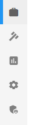
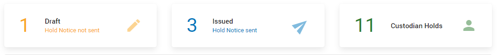
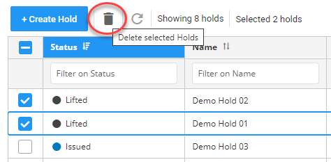

Note: Filtering/sorting works the same on all pages.
The Hold Management page is the main page where you can view, filter, sort, edit, export the Hold Management View, delete holds and keep track of all holds that have been created. On the Hold Management page you can also create a Hold.
Switch via the icons in the menu to Matter Management, Reports, Configuration or Admin Center.

The tiles at the top of the page display the drafts (number of holds that have been created but not yet issued), issued (number of holds for which the hold notices have been sent), and custodian holds (number of custodians of all issued holds).
Issued holds are the active or in progress holds; Hold Notices are sent to all selected custodians.

View created holds and filter/sort them via the columns.
|
|
Note: Filtering/sorting works the same on all pages. |

To add/remove columns, select the Settings icon 
Then, select Columns and (de)select the appropriate columns.
To create a Hold, select 
Edit a hold via the Go to Hold icon 
You can also open and edit a Hold, by double clicking the correct row.
Delete a single hold via the Delete icon 
Delete multiple holds by selecting them and clicking the Delete selected Holds icon

|
|
Note: You can only delete a hold when it has been lifted. |

After edit or delete actions, update the Address Book View with the Refresh icon 
Export the Hold Management View as CSV, Excel or PDF.
First, select the Settings icon
Then, select Export As.... and select the format to which you want to export.
The Hold Management View might have been adjusted by filtering, sorting and/or by a specific selection of columns (via Settings > Columns).
To save this new view, select the Settings icon
Then, select Save View.